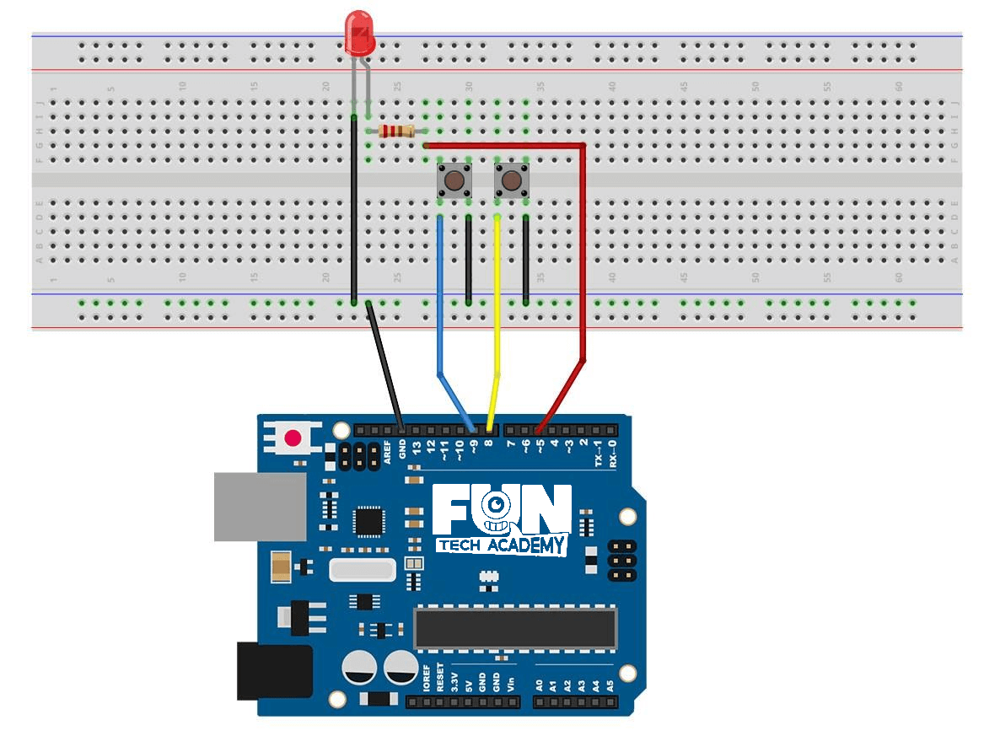
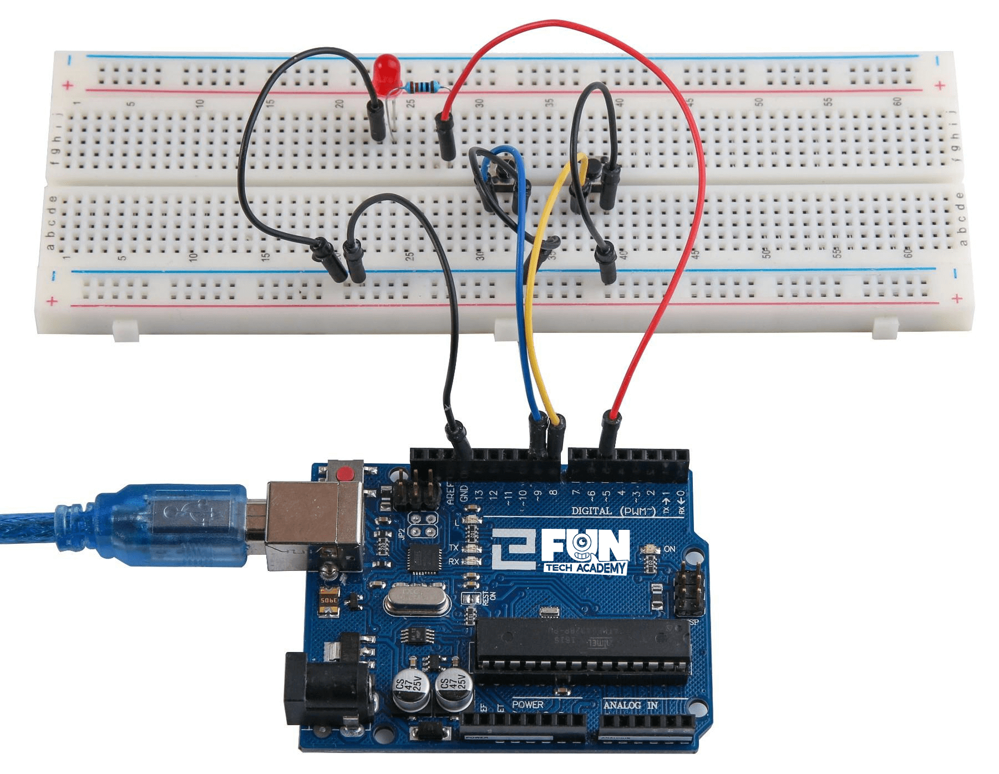

En este tema, aprenderemos a utilizar los botones con entradas digitales para encender y apagar un LED.
(1) x Placa Arduino
(1) x Protoboard
(1) x LED rojo de 5mm
(1) x Resistencia de 220 ohmios
(2) x Interruptores de presión
(7) x M M cables (cables de puente de macho a macho)
Los interruptores son componentes muy simples. Pueden ser del tipo botón, que se activarán cuando los pulses
o pueden ser de palanca, que consisten en mover la posición de un lado a otro.
Estos componentes conectan dos contactos para que la electricidad fluya a través de ellos.

Aunque los cuerpos de los interruptores son cuadrados, los pasadores sobresalen de los lados opuestos del
interruptor. Esto significa que los pines sólo estarán lo suficientemente separados cuando se colocan
correctamente en la placa de pruebas.
Recuerda que el LED tiene que tener el polo negativo más corto a la izquierda.
Si tenemos todo el cableado bien, deberíamos tener algo como en la imagen, de no ser así debemos revisar los apartados anteriores.

Una vez efectuado todo el cableado, descargaremos el script del siguiente link y lo cargaremos como hemos aprendido.
Una vez que el script esté cargado en la placa de arduino, presionaremos el botón izquierdo y veremos
que el LED se enciende y si pulsamos el botón derecho se apaga.
En la primera parte del script se definen tres variables para los tres pins que se van a utilizar. El
ledPin es el pin de salida y buttonApin se refiere al interruptor más cerca
de la parte superior de la placa y el buttonBpin para el otro interruptor.
La función de void setup( ) define el ledPin como una salida normal y los
buttons como entradas, utilizando la palabra reservada INPUT_PULLUP.
pinMode(PinBotonA, INPUT_PULLUP);
pinMode(PinBotonB, INPUT_PULLUP);
El modo pin de INPUT_PULLUP significa que el pin debe ser utilizado como una entrada, pero además el termino
PULLUP significa que al conectarse el componente, su valor por defecto será HIGH (alta).
Por esta razón los interruptores están conectados a tierra y cuando un interruptor se presiona, se conecta la
clavija de entrada a la tierra. Puesto que la entrada es normalmente alta y va sólo baja cuando se pulsa el
botón, la lógica esta invertida. Nos encargaremos de esto en la función loop
void loop()
{
if (digitalRead(PinBotonA) == LOW)
{
digitalWrite(PinLed, HIGH);
}
if (digitalRead(PinBotonB) == LOW)
{
digitalWrite(PinLed, LOW);
}
}
En la función loop hay dos declaraciones if, una para cada botón. Cada una
hace un digitalRead en la entrada adecuada.
Recuerda que si se presiona el botón, la entrada correspondiente será baja, si el botón A es bajo, entonces
un digitalWrite en el ledPin enciende, del mismo modo, si se presiona el botón B, un bajo se
escribe en el PinLed.
Hemos visto como con dos botones, uno enciende el LED y otro lo apaga.
Ahora vamos a hacer lo mismo, pero con un solo botón. Si lo pulsamos una vez lo encendemos y si lo volvemos a
pulsar, lo apagamos.